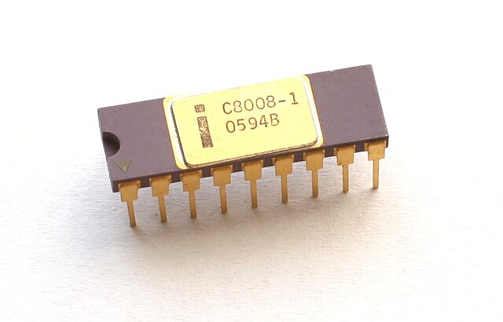
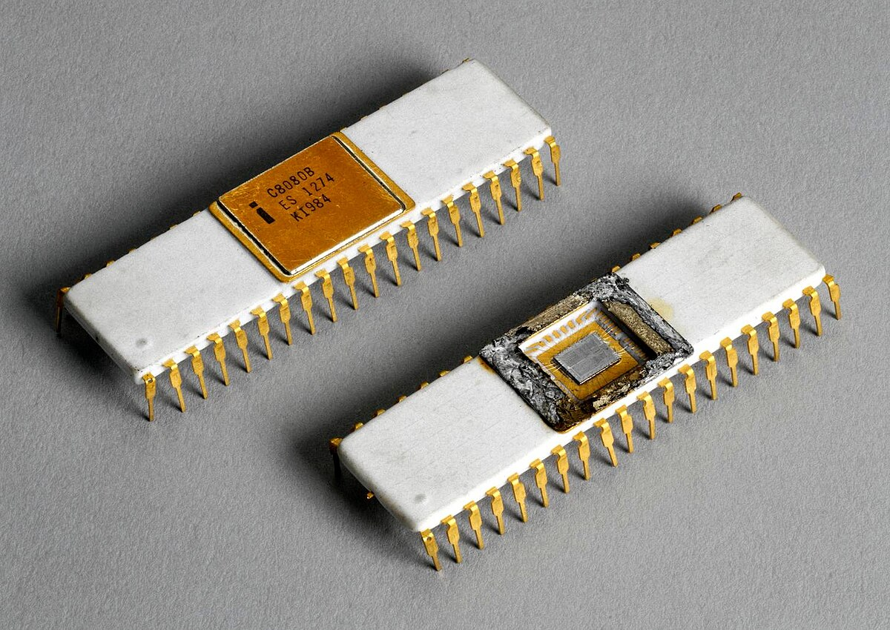
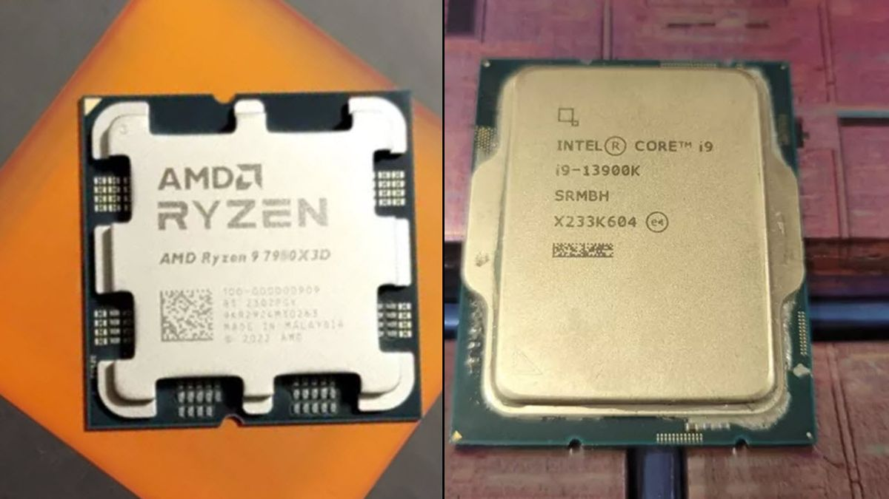

[1] Intel 4004

[2] Intel 8008
[2] Intel 8008

[3] Intel 8080
[3] Intel 8080

[4] Intel 8086

[5] Intel ed AMD Ryzen
[5] Intel ed AMD Ryzen
La storia dei microprocessori è una storia di innovazione e progresso, che ha portato alla rivoluzione informatica che viviamo oggi. Tutto è iniziato negli anni '70, con l'introduzione del primo microprocessore, l'Intel 4004[1], nel 1971. Questo piccolo chip conteneva 2.300 transistor e poteva eseguire semplici operazioni aritmetiche. Fu progettato per essere utilizzato in una calcolatrice, ma segnò l'inizio di una nuova era nell'informatica.
L'Intel 4004 fu seguito da altri microprocessori, come l'Intel 8008[2] e l'Intel 8080[3], che offrivano prestazioni sempre maggiori. L'Intel 8080, lanciato nel 1974, fu un passo avanti decisivo. Questo microprocessore, con 6.000 transistor, era molto più potente e versatile, e aprì la strada alla creazione dei primi personal computer. Il suo successo portò alla nascita di una nuova industria, quella dei personal computer, che avrebbe rivoluzionato il mondo.
Negli anni '80, l'Intel 8086[4], introdotto nel 1978, segnò un'ulteriore svolta nell'evoluzione dei microprocessori. Questo chip, con 29.000 transistor, era 16 bit e offriva una potenza di calcolo significativamente maggiore rispetto ai suoi predecessori. L'8086 era progettato per essere utilizzato in sistemi operativi a 16 bit, come MS-DOS, e fu il cuore dei primi PC IBM. La sua architettura, con un'unità di gestione della memoria (MMU) e un bus di dati a 16 bit, permise di gestire grandi quantità di memoria e di eseguire programmi più complessi.
L'Intel 8086 fu seguito da una serie di microprocessori sempre più potenti, come l'Intel 80286, l'Intel 80386 e l'Intel 80486, che portarono a un costante aumento della potenza di calcolo e della capacità di memoria dei personal computer. L'architettura x86, sviluppata da Intel, divenne lo standard per i personal computer e continua a essere utilizzata oggi, con processori come l'Intel Core i9 e l'AMD Ryzen 9[5] che offrono prestazioni incredibili.
Oggi, i microprocessori sono utilizzati in una vasta gamma di dispositivi, dai telefoni cellulari ai computer portatili, dai server ai sistemi embedded. La loro potenza di calcolo è aumentata esponenzialmente, permettendo di eseguire compiti sempre più complessi. L'evoluzione dei microprocessori continua senza sosta, con nuove tecnologie come l'intelligenza artificiale e il machine learning che stanno aprendo nuove frontiere nell'informatica.